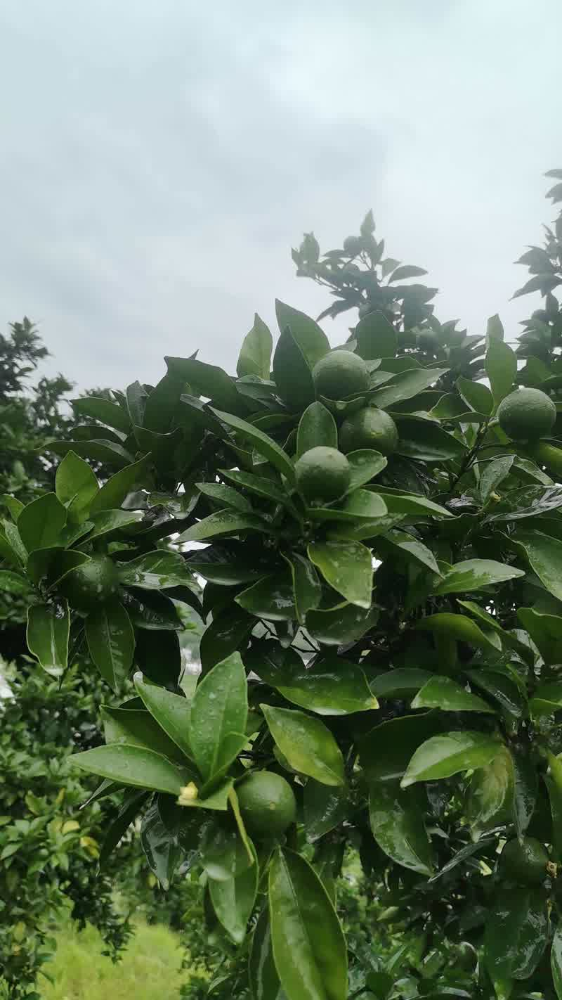
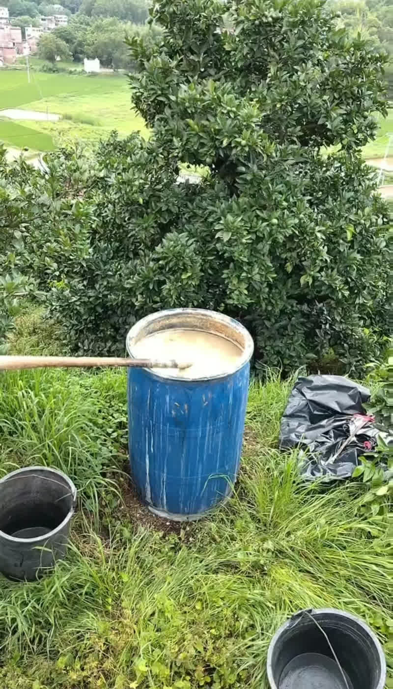

一、引言：深耕细作，匠心种植
在赣南这片红土地上，拉吾尤摩的农业技术团队始终秉持着"以自然之道，养自然之果"的理念。每一个种植环节都凝聚着我们对品质的极致追求。本文将详细记录2023年5月下旬，我们在赣南脐橙果园进行菜枯肥施用的具体过程，分享我们对绿色生态种植的实践与思考。

二、背景：为何选择菜枯肥？
5月下旬正值赣南脐橙幼果膨大期和夏梢萌发期，是果树生长的关键时期。此时，树体对养分的需求量急剧增加。传统的化学肥料虽然见效快，但长期使用容易导致土壤板结、酸化，影响果实品质和果园的可持续发展。
相比之下，菜枯肥（油菜籽榨油后剩下的渣粕）作为一种优质的有机肥料，具有以下显著优势：
- 营养丰富：含有氮、磷、钾等多种营养元素，以及丰富的有机质，能全面补充果树所需养分。
- 改良土壤：增加土壤有机质含量，改善土壤团粒结构，增强土壤保水保肥能力。
- 生态环保：天然有机物，无化学残留，符合绿色生态种植的要求。
- 提升品质：缓慢释放养分，有助于果实糖分积累和风味物质形成，提升脐橙的整体品质。
三、准备工作：精心计划，有条不紊
1. 菜枯肥的选择与处理
我们选择了正规厂家生产的、发酵完全的菜枯饼。新鲜的菜枯饼含有较高的油脂和刺激性物质，直接使用会对根系造成伤害。因此，我们选用的菜枯饼已经过充分发酵腐熟，呈深褐色，无异味，质地疏松。
2. 施肥时间的确定
选择晴朗的天气进行施肥，避开雨天，以防止肥料被雨水冲刷流失。5月下旬，气温适宜，有利于肥料的分解和吸收。
3. 工具与用量
根据果树的树龄和冠幅大小，确定合理的施肥量。对于成年结果树，每株施用腐熟菜枯饼2-3公斤。
四、施肥过程：细致操作，科学管理
1. 开沟挖穴
在距离脐橙树主干约60-80厘米处，围绕树冠外围挖一圈浅沟，深度约为15-20厘米。这个距离既能避免伤及主根，又能确保根系能够有效吸收养分。
2. 均匀撒施
将腐熟好的菜枯饼均匀地撒入沟内。注意不要将肥料直接堆放在树干根部，以免造成烧根现象。

3. 覆土回填
用开沟时挖出的细土将菜枯饼完全覆盖，并轻轻压实，使肥料与土壤紧密结合。覆土后，沟面应略高于地面，防止积水。
4. 浇水促效
施肥完成后，适量浇水，使土壤湿润，有助于菜枯肥的溶解和微生物的活动，从而加速养分的转化和吸收。
五、预期效果与后续管理
通过此次菜枯肥的施用，我们期望达到以下效果：
- 为脐橙幼果的快速膨大提供充足的养分支持。
- 促进夏梢的健壮生长，为来年的花芽分化打下基础。
- 逐步改善土壤环境，提高土壤肥力。
- 从源头上保障赣南脐橙的优良品质。
施肥后，我们将密切观察果树的生长反应，并结合土壤检测和叶片分析，制定后续的水肥管理方案，确保果树健康生长。
核心理念：拉吾尤摩坚信，优质的果实源于优质的土壤。我们坚持使用有机肥料，用心呵护每一寸土地，因为我们深知，只有健康的土壤才能孕育出健康的果实，才能为您带来真正的甜蜜与安心。
六、结语：责任与承诺
每一次精细的田间管理，都是拉吾尤摩对品质承诺的践行。从选种、育苗到施肥、管护，我们力求在每一个环节都做到尽善尽美。这份5月下旬的施肥纪实，只是我们日常工作的一个缩影。未来，我们将继续分享更多关于赣南脐橙及其他水果的种植故事，让您更深入地了解我们是如何将大自然的馈赠，转化为您手中的美味与健康。